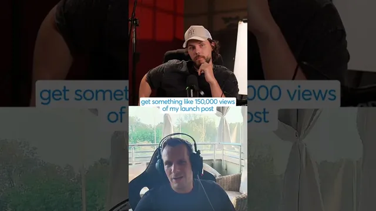

광고비 0원으로 ARR 200만 달러까지

원본 영상 보기 →
- 팔로워 수보다 타겟 고객의 위치
- 제품마다 채널을 따로 설계
- 선택과 집중이 유료 광고보다 강하다
한 줄 요약
$0의 유료 광고 예산으로 여러 제품을 키운 창업자가, 제품마다 완전히 다른 유입 경로(X 트렌딩, SEO, 입소문)를 어떻게 골라 썼는지 짧게 풀어준다.
전체 내용 정리
제품마다 유입 경로는 완전히 다르다 — 하나의 공식은 없다
"스타트업 고객을 어디서 확보하냐"는 질문에 그는 X(트위터) 팔로워가 많아서가 아니라고 먼저 선을 긋는다. 바로 전날 출시한 GrokBot.dev(GrokBot을 위한 활용 사례 모음과 플러그인)는 X에만 올렸는데, 본인 팔로워는 수천 명밖에 안 되지만 타겟 고객이 원래 X에 모여 있어서 트렌딩을 탔고 출시 게시물이 조회수 15만 회를 기록했다. 반면 'YouTube to Transcript'는 순수하게 SEO만으로 밀었다. "YouTube Transcript" 키워드 검색 1위를 차지해 매일 약 7만 명이 클릭하고, 지금까지 약 7만 명이 크롬 확장 프로그램을 설치했다 — 광고는 전혀 쓰지 않았다. 'Transcript API'는 SEO에 더해 'YouTube to Transcript'가 잠재 고객을 발굴해주는 역할을 한다. 'CRHQ'는 완전히 다른 방식으로, 15년간 사업을 운영하며 쌓은 기업가 네트워크(수백 명의 CEO가 모인 왓츠앱 그룹)를 통해 입소문으로 퍼진다.
유료 광고는 그에게 전혀 효과가 없었다
트위터, 레딧, 구글 애드센스까지 시도해봤지만 딱 맞는 제품을 찾지 못해 지금 포트폴리오에는 유료 광고가 아예 없다고 말한다. 레딧 광고는 어느 정도 성과는 있었지만 아주 미미한 수준이었다. 그가 정리하는 선택지는 결국 몇 가지뿐이다 — 유료 광고, 소셜 미디어/소셜 활동, SEO, 아니면 인맥을 통한 B2B 직접 영업(전화로 "한번 써보실래요?" 묻는 것)이다. 다들 저지르는 가장 큰 실수는 이 중 너무 많은 걸 한꺼번에 시도하는 것이라며, 타겟 고객과 ICP를 확실히 파악해서 하나를 제대로 공략해야 한다고 강조한다.
핵심 인사이트
- 팔로워 수보다 타겟 고객의 위치: X 팔로워가 수천 명뿐이어도 타겟 고객이 그 플랫폼에 모여 있으면 트렌딩만으로 15만 조회수가 나온다 — 채널 선택은 팔로워 규모가 아니라 고객이 실제로 있는 곳을 기준으로 해야 한다.
- 제품마다 채널을 따로 설계: 같은 창업자의 제품 4개가 각각 SEO, 소셜 트렌딩, 크로스 프로모션, 입소문이라는 서로 다른 채널로 성장했다 — 하나의 성장 공식을 모든 제품에 복붙하지 않는다는 뜻이다.
- 선택과 집중이 유료 광고보다 강하다: 트위터·레딧·구글 애드센스를 다 시도했지만 실패했고, 대신 SEO 하나에 집중한 제품이 하루 7만 클릭을 만들었다 — 여러 채널을 얕게 시도하기보다 ICP에 맞는 채널 하나에 깊게 파는 쪽이 이겼다.
오늘 당장 해볼 것
- 지금 운영 중인 제품/서비스별로 "내 타겟 고객이 실제로 모여 있는 채널이 어디인지"를 하나씩 따로 적어보고, 전 제품에 같은 채널을 쓰고 있다면 재점검한다.
- 이번 주 유료 광고에 쓰던 예산 일부를 검색 키워드 1개(자기 제품과 직결된 키워드) SEO 콘텐츠 제작에 옮겨본다.
- 기존 고객·동료 네트워크(단체 채팅방, 커뮤니티) 중 입소문이 퍼질 만한 곳이 있는지 점검하고, 신제품 출시 시 그곳에 먼저 공유하는 루틴을 만든다.